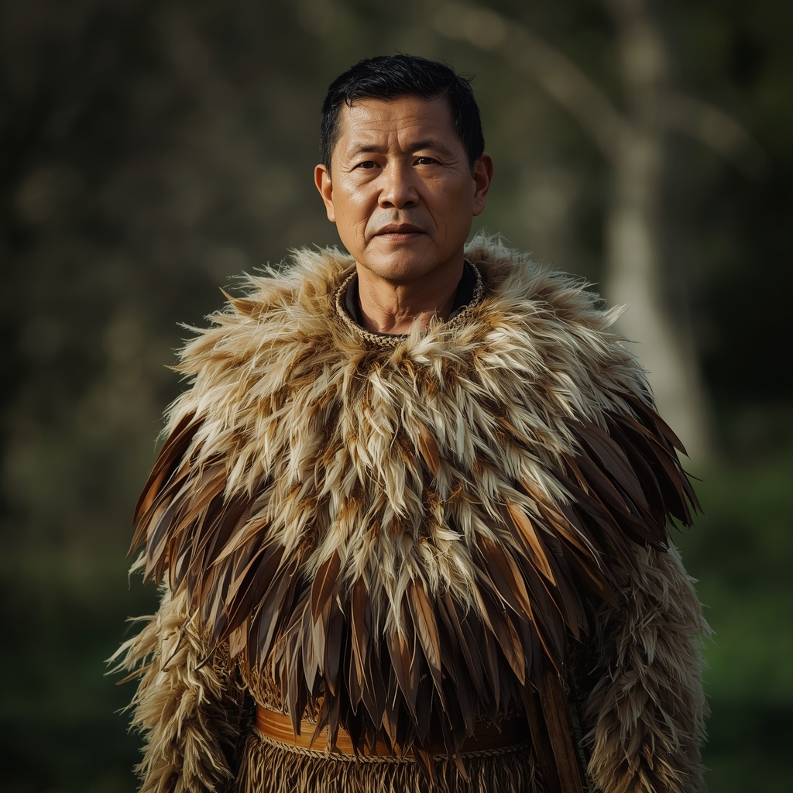

🧑🤝🧑 世界の民族・人びと
People of the World。国境を越えて暮らす人びとを、地域ごとに紹介します。伝統だけでなく、今の暮らしも一緒に。

マオリ
🗣 使用言語
マオリ語、英語
👥 人口の目安
約98万人(2023年ニュージーランド国勢調査、マオリ系と申告した人口)
👘 伝統衣装
伝統衣装は亜麻(ハラケケ)の繊維で編んだ肩掛け「コロワイ」や腰蓑「ピウピウ」があり、羽根で飾った「コロワイ」は地位の高い人物の正装として用いられる。
🏠 住居
共同体の中心となる集会所「マラエ」には彫刻を施した会堂「ワレヌイ」が置かれ、部族(イウィ)の系譜や物語が彫刻や織物に表現されている。
🍲 食文化
伝統的な調理法「ハンギ」は、地面に掘った穴に焼いた石を敷き、肉や魚、さつまいも(クマラ)などをかごに入れて蒸し焼きにするもので、現在も祝いの席で行われる。
🎵 音楽・踊り
戦いの前や祝賀の場で披露される詠唱と力強い動きを伴う「ハカ」が世界的に知られ、集団で歌い踊る「カパ・ハカ」も伝統芸能として継承されている。
🎉 行事・祭り
各地のマラエで行われる集会や、カパ・ハカの発表会、正月にあたる「マタリキ(プレアデス星団の出現を祝う祭り)」などが重要な行事とされる。
🙏 信仰・価値観
祖先や土地(ファヌア)との精神的なつながりを重視する信仰体系を持ち、キリスト教の伝来後は伝統的な信仰とキリスト教が併存する形で受け継がれている。
📜 歴史
マオリは13世紀頃から14世紀にかけて東ポリネシアからカヌーでニュージーランドに渡ってきた人々の子孫とされる。1840年のワイタンギ条約締結後、土地をめぐる紛争や同化政策により多くの困難に直面したが、20世紀後半以降マオリ語の公用語化(1987年)など権利回復の取り組みが進んだ。
🏙 現代の暮らし
現在はニュージーランド社会の重要な構成員として政治・文化・スポーツ(特にラグビー)など幅広い分野で活躍し、マオリ語教育や伝統文化の復興運動も活発に行われている。
🇯🇵 日本との関係
ラグビーワールドカップなどの国際試合で披露される「ハカ」は日本でも広く知られており、2019年ラグビーW杯日本大会をきっかけにマオリ文化への関心が高まった。
🌍 関連する国

出典: https://en.wikipedia.org/wiki/M%C4%81ori_people(2026-09-01時点) / https://www.britannica.com/topic/Maori(2026-09-01時点) / https://www.newzealand.com/us/feature/maori-hangi/(2026-09-01時点)